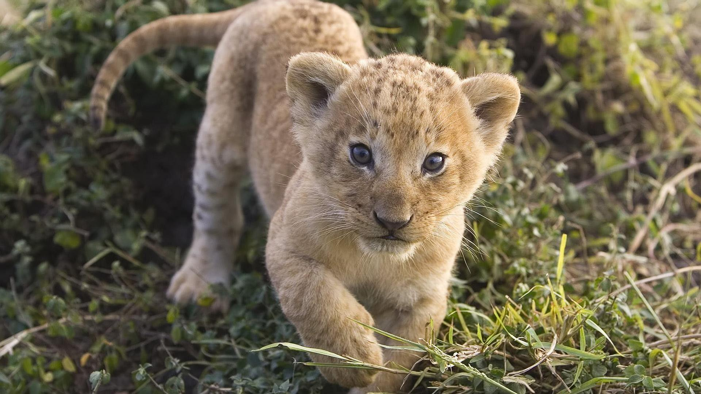

Lionbaby:
The baby lions use our mother's milk for food when they are young, and they go hunting in groups, and hunting is mostly on the mother's shoulders and they bring us food. They can hunt big animals like giraffe, buffalo and donkeyThe male lion does not hunt for the child, but he has the duty of protecting the group and its territory; We lions rest a lot and we like to go hunting at night. We can survive without drinking water for 4 or 5 days. Our lifespan is 10 to 15 years, but if we are kept in the zoo, we may live for 20 years.